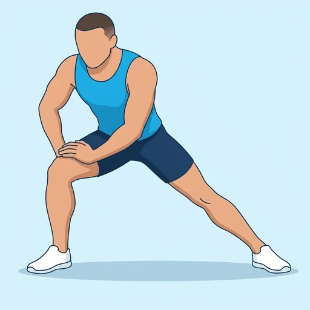

Standing Adductor Stretch
A standing stretch for the inner thigh: with your feet wide apart, you bend one knee and shift your weight to that side while the other leg stays straight. The straight leg's adductors lengthen as your hips sink toward the bent side.
Upper legs · Bodyweight · Beginner

Muscles worked by the Standing Adductor Stretch
Primary
Secondary
Also called: hip adductors, inner thigh, adductor muscles, groin.
Equipment
No equipment — this is a bodyweight exercise.
How to do the Standing Adductor Stretch
- Stand with your feet about twice shoulder-width apart and your toes pointing forward.
- Put your hands on the bent knee or in front of you for support.
- Bend one knee and shift your hips sideways over that leg, keeping the other leg straight.
- Keep your chest up and both feet flat on the floor.
- Sink down until you feel a stretch along the inner thigh of the straight leg and hold it.
- Shift to the other side and repeat.
Form tips
- Keep the straight leg's foot flat or lift only the toes slightly; letting the foot roll out takes the stretch away.
- Use your hands on the bent thigh to support your weight and keep your torso tall.
- Do not bounce; sink slowly and stay within a stretch that feels strong but comfortable.
At a glance
| Body part | Upper legs |
|---|---|
| Category | Stretching |
| Force type | Static |
| Mechanic | Isolation |
| Difficulty | Beginner |
| Equipment | Bodyweight |
| Goals | Mobility |
| Tags | Mobility, Stretching |
| MET | 5.0 (metabolic equivalent, for calorie estimates) |
| Unilateral | Yes |
| Bodyweight | Yes |
| Dataset id | standing-adductor-stretch |
Standing Adductor Stretch in German & Spanish
| German | Stehende Adduktoren-Dehnung |
|---|---|
| Spanish | Estiramiento de Aductores de Pie |
Descriptions, instructions and tips ship in all three languages in the JSON.
Related exercises
Exercise data (JSON)
The record below is exactly what exercises.json ships for this exercise — names, descriptions, instructions and tips in English, German and Spanish.
{
"id": "standing-adductor-stretch",
"name_en": "Standing Adductor Stretch",
"name_de": "Stehende Adduktoren-Dehnung",
"name_es": "Estiramiento de Aductores de Pie",
"description_en": "A standing stretch for the inner thigh: with your feet wide apart, you bend one knee and shift your weight to that side while the other leg stays straight. The straight leg's adductors lengthen as your hips sink toward the bent side.",
"description_de": "Eine Dehnung im Stehen für die Oberschenkelinnenseite: Mit weit auseinanderstehenden Füßen beugst du ein Knie und verlagerst dein Gewicht auf diese Seite, während das andere Bein gestreckt bleibt. Die Adduktoren des gestreckten Beins dehnen sich, während die Hüfte zur gebeugten Seite sinkt.",
"description_es": "Un estiramiento de pie para la cara interna del muslo: con los pies muy separados, flexionas una rodilla y pasas el peso hacia ese lado mientras la otra pierna permanece estirada. Los aductores de la pierna estirada se alargan a medida que las caderas se hunden hacia el lado flexionado.",
"category": "stretching",
"force_type": "static",
"mechanic": "isolation",
"difficulty": "beginner",
"body_part": "upper_legs",
"primary_muscles": [
"adductors"
],
"secondary_muscles": [
"hamstrings"
],
"goals": [
"mobility"
],
"tags": [
"mobility",
"stretching"
],
"is_unilateral": true,
"is_bodyweight": true,
"instructions_en": [
"Stand with your feet about twice shoulder-width apart and your toes pointing forward.",
"Put your hands on the bent knee or in front of you for support.",
"Bend one knee and shift your hips sideways over that leg, keeping the other leg straight.",
"Keep your chest up and both feet flat on the floor.",
"Sink down until you feel a stretch along the inner thigh of the straight leg and hold it.",
"Shift to the other side and repeat."
],
"instructions_de": [
"Stelle dich etwa doppelt schulterbreit hin, die Zehen zeigen nach vorn.",
"Stütze die Hände auf das gebeugte Knie oder vor dir ab.",
"Beuge ein Knie und verlagere die Hüfte seitlich über dieses Bein, während das andere Bein gestreckt bleibt.",
"Halte die Brust oben und beide Füße flach auf dem Boden.",
"Sinke ab, bis du eine Dehnung entlang der Oberschenkelinnenseite des gestreckten Beins spürst, und halte sie.",
"Wechsle zur anderen Seite und wiederhole."
],
"instructions_es": [
"Ponte de pie con los pies separados aproximadamente el doble del ancho de los hombros y las puntas hacia delante.",
"Apoya las manos en la rodilla flexionada o delante de ti para sostenerte.",
"Flexiona una rodilla y desplaza las caderas hacia el lado de esa pierna, manteniendo la otra pierna estirada.",
"Mantén el pecho elevado y ambos pies planos en el suelo.",
"Baja hasta sentir un estiramiento a lo largo de la cara interna del muslo de la pierna estirada y mantenlo.",
"Pasa al otro lado y repite."
],
"tips_en": [
"Keep the straight leg's foot flat or lift only the toes slightly; letting the foot roll out takes the stretch away.",
"Use your hands on the bent thigh to support your weight and keep your torso tall.",
"Do not bounce; sink slowly and stay within a stretch that feels strong but comfortable."
],
"tips_de": [
"Halte den Fuß des gestreckten Beins flach oder hebe nur leicht die Zehen; rollt der Fuß nach außen, geht die Dehnung verloren.",
"Stütze dein Gewicht mit den Händen auf dem gebeugten Oberschenkel ab und halte den Oberkörper aufrecht.",
"Wippe nicht; sinke langsam ab und bleibe in einer Dehnung, die sich stark, aber angenehm anfühlt."
],
"tips_es": [
"Mantén el pie de la pierna estirada plano o levanta solo ligeramente las puntas; si dejas que el pie ruede hacia fuera, se pierde el estiramiento.",
"Usa las manos sobre el muslo flexionado para apoyar tu peso y mantener el torso erguido.",
"No rebotes; baja despacio y quédate dentro de un estiramiento que se sienta intenso pero cómodo."
],
"met": 5.0,
"images": {
"flat": {
"main": "images/flat/standing-adductor-stretch-main.webp"
}
}
}Fetch just this exercise
const { exercises } = await fetch(
"https://exercise-dataset.com/exercises.json"
).then(r => r.json());
const ex = exercises.find(e => e.id === "standing-adductor-stretch");Free for personal and commercial in-app use with attribution (“Exercise data by RepDB”) — see the license and ready-made attribution snippets. Redistributing the data as a dataset or API is not permitted.